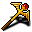

アスモデウスの王笏 sceptre of Asmodeus
大悪魔『アスモデウス』の力の一部が込められた、輝くルビーの王笏だ。使い手の命に従わせるべく、地獄の故郷から炎の悪魔を呼び出すことがある。
基本命中: -1 基本ダメージ: 15 基本所要時間: 1.5
この武器の最小所要時間(0.7)にはスキルレベル16で到達する。
Hellfire Court: 敵を攻撃したとき、炎と地獄の悪魔を召喚することがある。
このイブニングスターは「鈍器」に分類される。片手持ちの武器だ。
これ以上強化することはできない。
この古代のアーティファクトは、魔法でも通常の手段でも変えることはできない。